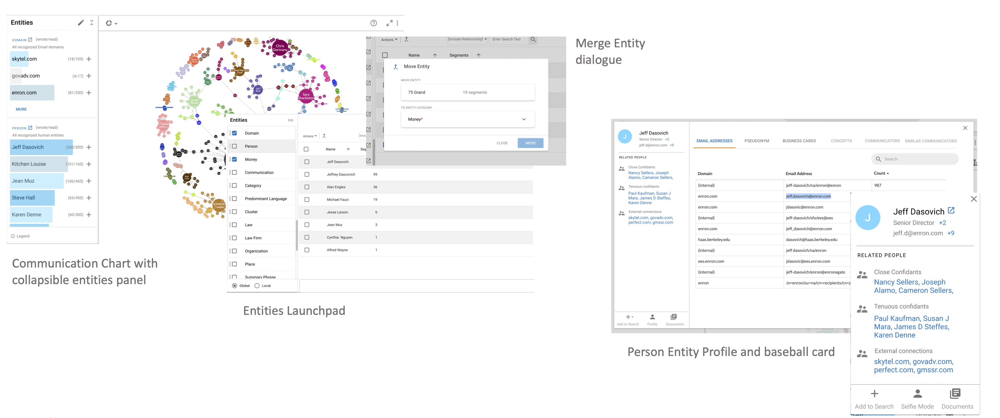
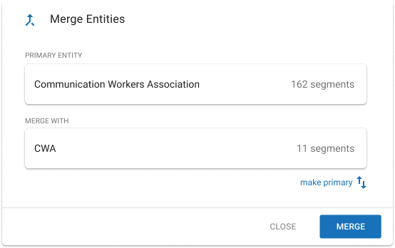

The communication chart with collapsible entity panel — giving legal reviewers a visual way to navigate complex case data.
IPRO
Integrating AI-powered entity detection and communication charting into a legal review platform.
The communication chart with collapsible entity panel — giving legal reviewers a visual way to navigate complex case data.
Overview
IPRO partnered with NexLP to integrate their AI-driven entity detection tools — communication charts and entity management — directly into the legal review search experience. The goal was to give users a more visual, interactive way to explore case data rather than relying solely on keyword searches.
This meant designing components based on NexLP's existing UI using Material UI, pulling in chart controls and functionality, and creating an experience that felt native to IPRO's platform while leveraging NexLP's powerful underlying technology.
Research
We ran concept testing with 5 expert users — a mix of internal service providers and external clients — through 45-minute prototype screenshare sessions. Users were given the prototype and observed as they navigated, providing feedback in real time.
Feedback on the existing NexLP experience revealed clear pain points:

Named Entity Recognition in action — automatically detecting people, organizations, and addresses across case documents.

The merge entities dialogue — combining duplicate entities with clear warnings to prevent unintended changes.

Interactive communication chart — drilling into entity relationships and filtering connections in real time.
Concept Design
The proposed design brought together five connected pieces into a cohesive experience:
Findings
4.13
Average experience rating (out of 5)
5/5
Users engaged with chart interactivity
The entity list was the standout feature — users found it immediately useful for building searches. Every participant commented on the ability to interact directly with the communication chart. Users also expected charts on screen to update in tandem, functioning like a live search — an ambitious feature that we planned to phase in after initial implementation.
One thing we cut: the business card section of entity profiles. Users saw the information but couldn't articulate its value in their workflow. We recommended abandoning it.
Recommendations
We structured the implementation into three phases. The immediate priority was implementing NexLP's API for the communication chart, controls, and entities list — along with quick wins like making the entities list visible by default and giving the chart maximum container space.
The next phase focused on tighter integration: better merge visibility, updated baseball card information based on user feedback, timeline integration, and support for live Early Data Assessment use.
The long-term vision included leveraging the entities list across other widgets, introducing NexLP's tree chart, full-size chart views, and the live searching feature users had asked for.